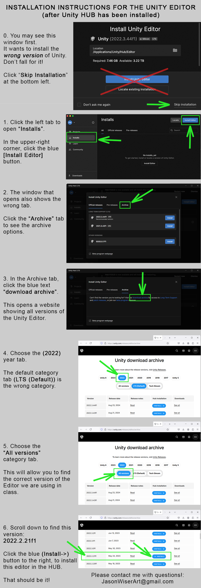

UNITY - LEARNING RESOURCES HUB
This is a directory of Unity resources for my courses. Please start by following our Course Tutorials below, then seek more answers on YouTube, the official Unity Documentation, and Learning Center.The Unity Game Engine is FREE for learning and publishing projects that earn less than $100k.
1. Start by creating a Unity ID for a free license.
2. Download and install the Unity HUB.
When prompted:
- Sign in using your unity ID, and accept a personal licence.
- Please do NOT install the Editor they recommend: hit Skip.
- If you encounter a security issue on a Mac, try this solution.
 3. Download and install our Unity Editor version from the Unity Archive (we will use this version this term: 6000.0.42f1, direct install link, about 4-6 gigs):
- Find the correct version, click the blue [Unity Hub] button to install through Unity Hub.
- When prompted in the Hub, turn off Visual Studio and scroll down to turn on WebGL, then hit [Install] (20-30 minutes). You can also follow these steps.
4. Download and install an IDE for coding.
Visual Studio is offered with the Unity Editor (requires free Microsoft account), or use any IDE you prefer. Teacher likes VS Code (optionally, get the Unity for VS Code
extension).
5. Create your first SOLO Unity 2D project:
- Create a desktop folder for this course named "GameDesign".
- Under the Unity Hub Project tab: click [New] to create a new Unity game project.
- Choose Templates, then 2D core.
On the right type a name (YourName_Tutorial1) and a location (Desktop GameDesign folder, to keep name path short and local). - Hit [Create].
The new Unity project is created in that folder, and then the Editor opens (in about 15-30 minutes).
NOTE: An Editor can be added manually to Hub:
Did you install an Editor without going through the Hub?
Here is how to add it:
- Open Unity Hub, go to Installs tab, click [Locate].
- Navigate to Program Files > Unity > Editor to select the Unity Application (Or, on a Mac: open Finder, open Applications > Unity > Hub > Editor > version to select the Application).
- Hit [OK] to add the version-square to Unity Hub.
EDITOR CONSIDERATIONS:
When you work with a team, you need to be on the same Unity version in order to collaborate.The version of the Editor your team chooses should always be a stable LTS version (to work easily with teacher and TAs, please use the course version).
MODULES:
We will primarily create games to run on computers (typically WebGL, which requires a Unity Module, but some projects need PC / Mac builds).
- For Mobile Android Games: in Unity Hub install the Android Module and two sub-modules. Export game as an APK to load onto the device.
- iOS phones and tablets are a closed system that requires a developer account to share projects.
TEAM PROJECT?
Set-Up GITHUB:- Create an account at GitHub.com.
- Create a new repo with default Unity .GitIgnore.
- On GitHub replace the .GitIgnore with this one.
- Install GitHub Desktop (or preferred Git tool).
- Clone the repo into a folder named GITHUB.
- Create your new Unity project INTO this folder, so the project folder is at the same level as the .GitIgnore (and Assets, etc are one level below).
NOTES FOR MAC USERS:
-
Don't Update your MAC OS:
Unity works well on Mac, but takes a while to catch up to new OS. If Unity works on your system at the start of a project, please do not update your Mac OS until the project is complete / semester is over.
- Expect Mac Permissions Issues.
Most can be solved with this solution.
One obscure but solved issue Unity has with Mac is permissions can cause the "bokken" error with WebGL builds. See this fix for bokken.

 [B]: INTRODUCTION TO THE UNITY GAME ENGINE:
[B]: INTRODUCTION TO THE UNITY GAME ENGINE:
WELCOME TO UNITY:
Below are intro tutorials on the Unity interface, 2D and 3D game development, and art and animaton.The Unity Editor has two modes: Edit and Play (toggle with [Ctrl]+[P])
Any Scene change in Play mode is lost when back in Editor.HINT: Set a Play mode interface color to avoid mistake changes: Edit > Preferences > Colors > Playmode Tint
EXPERIENCED CODERS:
Please note this list of Important Unity Classes (such as built-in management of Time and Random Numbers), so you do not need to make them yourself.TUTORIALS:
1. This intro to C# scripting and Unity Tutorial starts with basic scripting and ends with a short 2D game: catch randomly falling trees.
2. Create a Visual Novel game with Branching Dialogue. Ths game is created in the Unity Canvas UI system. The Full steps include:
- Project set-up
- making the GameHandler
- making Frame Scenes: the MainMenu, etc
- the main Story Script
- UI VFX
4. Options for creating a 2D platformer or Top-Down game. Modules include: Backgrounds, Players for Platformers or Top-down, Camera follow, GameHandlerand UI, NPC Enemies and Friendlies, environment Hazards, Game Feel FX, and Audio
5. This intro 3D Unity Tutorial covers the basics of working in 3D spaces.
SOURCES: FPS Controller, MP3 SFX
6. Mecanim for 3D Character Animation
SOURCES:FBX,
Knight /
Zombie PNGs
MORE 3D TUTORIALS:
- 3rd-POV Player Moves, Cinemachine
- Nav Mesh for NPC paths, Player Control
- 3D Pickup-and-deliver an object stack
- Key Generator for player entry, navigation
- Rocketship Tour: LERP between points
- NPC Dragon: flying / attacking intervals
- Rising Lava: test relative height
7. Intro to 3D Game art:
- Blender Interface
- Game Asset creation
- Character Modeling
and Rigging
8. A tutorial on creating
natural enviroments
and VFX in Unity:
[C]: OTHER USEFUL UNITY GAME TUTORIALS:
VIRTUAL REALITY
Unity can be used to create VR content for mobile or console devices, like Oculus Quest or the HTC Vive
Unity can create AR content for mobile devices.
The VUFORIA plugin works with most devices 2015+:
Show off your 3D models on the web!
Modern phones can use AR ModelViewer
All browsers can show 360 Panoramas
including 2D Character Sprite Animation
RESOURCES: 2D Art Assets, Coin Art PNGs, SoundFX MP3s
Our original 2D TOP-DOWN GAME
- Setting-Up (multi-layer colliders): instructionsPlayer Move and Mouse-Aiming
- Player Battle: shooting and melee
- NPCs: Follow Player, Distance Shoot, Death Gaze
- Complex AI GOAP videos: concept and instructions
Multiple Scenes: Use Scene Manager and Build Settings to switch scenes, and Static Variables on common Game Controller scripts to transmit values.
- Create a Menu with an ESC-quit option
- Making a Save and Load system.
- Unity Collab and Controller Inputs (.PPTX)
Unity Object Animation:
- Door Open (with trigger)
- Fancy Scene Transitions
MORE MOVEMENT TYPES:
- Make a Flying Character | Elevator | Teleporter
- Rocket Ship Examples: 3D: 01 02 03 and 2D
- Cars: Basic Set-Up, Arcade, and Vehicle Enter/Exit
- Hover Car Examples: 01 | 02 | 03 | 04
Space Physics:
- Magnetic Space Walk | Gravity by Brackeys
Use vector3.cross for orbits | Orbital Physics
Newtonian physics in space | Planetary gravity
Swing on a tether with a 2d joint component
Unity tools for 2D backgrounds / games:
- Parallax Scrolling for distance and camera tracking
- Tile Mapping for top-down or isometric layouts, and making tilesets in Photoshop. Also: Rule Tiles, Prefab Brush, and Animated Waterfall (Shader Graph)
- Unity Drag and Drop> script
- BEHAVIOR TREES for AI: Text, videos 01, 02, 03
- 3D: Nav Mesh for pathfinding, AI, and Player Control
Intro to LERP for smooth transitions:
More Advanced Coding Concepts:
- Learn about Scriptable Objects
- Reasons to use and not to use Singletons
- Want inherited Classes? Try Overriding with Virtual Functions
UI / CANVAS
-
(see more recent tutorials under Action 2D)
- Basic Text Update and Button Handling
- Healthbar (on HUD vs character)
GAME MANAGEMENT
- Player Scoring / GameHandler
- Win and Lose (switch scenes)
SAVING GAME STATE: JSON
- Intro to JSON and Unity
- Saving to a JSON file
- Using JSON with WebGL builds
ARENA / LOCAL MULTI-PLAYER
- Input System for Local Multi-Player
Networked games are out-of-scope for our intro course. They require a dedicated programmer to set up and maintain the network code for the team. if you decide to move forward with a networked game, here are options:
UNITY NETCODE:
In 2022 Unity released a new 2-4 player networked game system: Netcode for Game Objects
- Start: Netcode documentation and tutorial: "Hello World"
- Then explore the Netcode Learning Hub
- See this example Unity 2D project: "Galactic Kittens"
WATCH these Code Monkey Videos:
- Galactic Kittens video breakdown (40 min)
- Try this single 1-hour tutorial for move matching
- Watch this FREE, full tutorial course on Unity Network Games (2023, about 6 hours).
DARKRIFT2: For games with 10+ players, consider Darkrift2 for Unity (free). The package and materials can be downloadeed from their website.
- See this excellent Darkrift2 FPS Tutorial and code
- Official Darkrift2 documentation (including a 2D tutorial. See links up top).
PUN2: For multiplayer gam,es with more than 4 players, Unity recommends using PUN2 (free).
See the documentation.
MIRROR: A (relatively) straightforward way to manage a 2-player networked game is to use Mirror for Unity (free). The Mirror package is in the Asset Store
- Steps for using Mirror to make a Card Game
- Official Mirror site and documentation
[D]: EXPORTING BUILDS TO SHARE YOUR GAME:
MAKE A WEBGL BUILD TO PLAY ON THE WEB:
Submit a web-enabled version of your Unity game, so all you have to do is share a single itch.io link playtesters! Best played in the Firefox Browser.
See this video for the Web Build steps in Unity 6.
(but turn on Development Build and use None instead of Brotli compression).
To export a WebGL game build from Unity:
1. In Unity, open File > Build Profiles (NOTE: Pre Unity 6, this was called "Build Settngs")
Make sure all your Scenes are loaded into "Scene List", with MainMenu at top (if any are missing, click [Open Scene List] and drag them in from the Scenes folder).
2. In the Left-side "Platforms" list, select Web.
- Click the [Install with Unity Hub] button
(Build Profiles right-side, 10-20 minutes).
This will open the Hub and automatically start the download / install.
NOTE: MAC users may need to enable permissions:
Preferences > Security/Privacy > General
click [Open Anyway]
- You may want to Save your Scene and Save Project and Close the Unity Editor.
Once installed, re-open your Project / Unity Editor.
- Open File > Build Profiles and select Web:
It should now show the [Switch Platform] button active top-right.
3. Click [Switch Platform] (takes 5-15 minutes to compile the change).
4. Hit [Add Build Profile] on middle-left to open the Platform Browser.
- Hit the [Add Build Profile] button in the Platform Browser to actually make the New Web Profile (will appear at the bottom of the list on the left).
- Rightclick this New Web Profile to rename it -- something like "WebBuild1"
- Left-click this profile to change it's settings (below)
IMPORTANT SETTINGS:
- Turn on "Development Build" (this prevents the "lagging" error. If you do not do this, and the build hangs in Unity unfinished, you may want to force-quit Unity, discard the build changes in GitHub, and possibly delete the Library > bee folder for a fresh try).
- Click [Customize Player Settings]:
- At the top-right click [Switch Profie] to confirm these changes and make this profile the active build settings.
OPTIONAL SETTINGS:
- Change the Company Name and Product Name.
- Create and upload a custom cursor:
- PNG, 72ppi, 32x32 or 64x64
- Set Texture Type = "Cursor" in the Inspector.
- PNG, 72ppi, 32x32 or 64x64
5. On your Desktop create a new folder named "GameName_build1".
Back in Unity Build Settings, hit [Build], and choose the new folder.
- The build will take a while: be patient!
- If you get a "build failed" error on Mac, try this solution.
(Compile errors will cause a build to fail: be sure all scripts function)
6. Make a .ZIP:
When the build is done, the folder should contain multiple files and folders.
Select the CONTENTS of the folder (NOT the folder itself) and RightClick to make a .ZIP.
(on a PC choose Compress To > Zip)
7. Create an itch.io or simmer.io account.
Be sure to confirm the email address (itch.io will send a message).
Create a New itch.io Project:
- Add name to the top.
- Set "Kind of Project" = HTML.
- Upload .ZIP, choose "Play in Browser".
- Set size = 1280 x 760 (creates some vertical buffer).
- Enable "Full Screen Button"
Play draft, then make public (publish).
REMINDERS AND FIXES:
-
Q: Did your Mac computer build fail with the "bokken" error?
A: This is usually a Permissions issue. Try this solution.
(OR uninstall and reinstall the Unity Editor, restart your computer between each stage).
Q: Does the game build sucessfully in Unity, but in the itch.io WebGL browser the loading bar gets stuck?
A: Turn off compresion in the Unity WebGL build settings (change compression from Brotli to None).
Q: Is something broken in your uploaded game?
A: In the Firefox browser, hit [Ctrl/Cmd]+[Shift]+[J] to view the Unity Debug.Log in itch.io's JavaScript console
WHAT UNITY FEATURES WORK IN WEBGL?:
The vast majority of Unity Editor functions work in WebGL!
BUT WebGL and itch.io are less forgiving of errors than Unity.
- Make builds early to test that eveything displays and behaves as intended!
- Make sure all script slots are properly filled in every Scene object (either directly in the Inspector or in code on runtime), so you have no Null Reference Exceptions (or any other compile errors).
The very few Unity classes that do NOT work in WebGL include:
- The default Microphone class (but there are downloadable assets that work)
- The Video Player Game Object (which is normally used to play MP4 files, but you should create animations instead using the Animation panel or Tweening).
MAKE PC / MAC STAND-ALONE BUILDS
(video): Downloadable games require two "builds" of your Unity project: one for PC and one for Mac. You would need to store these files online for people to download and run on their computers ( WebGL is prefered: no files to download, and only one build). Only Mac computers can make Mac builds. The notes below are from Unity versions before Unity 6:
Here is the process for making stand-alone builds for Mac and PC:
1. Make sure the GameHandler prefab is in every Scene, so we will be able to hit [esc] to get out of the build as needed.
2. Create two folders on your desktop:
GameName_PCbuild and GameName_MacBuild.
3. In Unity go to File > Build Settings.
4. Make sure all of your Scenes are loaded into the Build Settings, MainMenu at the top.
5. On the left choose your Platform (Standalone PC/Mac/Linux) and on the right choose your Target Platform (Win or Mac).
NOTE: Windows machines can only do Windows builds. Mac machines can do either.
6. Click the Player Settings button to configure your game settings (game name,company name, game icon, custom pointer, etc). In particular, make the play window resize-able. Hit [OK].
7. Click on [Build]. Choose the correct folder (one of the two you made).
8. When the Builds are complete, PLAYTEST THEM to be sure they work! You may want to make fixes and re-build to the same folders in order to hand in functional work.
9. To submit for class review, ZIP up each folder individually and upload both to a single post for that week's homework.
[E]: KEY CODING CONCEPTS FOR UNITY:
Learn Unity scripting with this Intro Unity C# Tutorial
BASIC CONCEPTS:
- Everything in Unity is a Game Object with Transforms.
We add Components for Mesh Rendering (to display as an object), 2D or 3D Physics (Colliders and RigidBody), Textures, Effects (like particles), and Custom Scripts.
- Unity uses C# for all scripting. Instead of one large body of code that references all parts of the game, scripts in Unity are shorter instructions on individual Game Objects. These modular scripts manage what that Object does and how it responds and communicates with other Game Objects through Colliders, Triggers, and Referenced Variables.
- To Create a Script: RightClick in the Project panel to Create > C# Script, and name it (no spaces, use HumpCap). This name is auto-assigned as the Class name in the script, and must be manually changed if the script name is changed. DoubleClick to open and edit in your editor (To assign editor: Edit > Preferences > External Tools). Save and drag onto a Game Object to add it as a Component. A script can be dropped on the Player, an enemy NPC, a pickup, door, projectile, etc.
CENTRALIZED STATES:
Typically an Empty Game Object named "GameHandler" is added to every Scene to hold the GameHandler.cs script. This script manages all key stats like player scoring and health, and a reference (in variables) to Canvas Text Objects to update the UI. Keeping all game states in one script (NOT on the character) makes many things easier, like running a multiplayer game.
TAGS AND LAYERS:
Every interactive Game Object, especially a Player, should get an indentifying property. At the top of the Inspector we set a Game Object's Tag (unique object) or Layer (category of objects). This allows code to reference the object (like when OnColliderEnter or OnTriggerEnter want to know if they have encountered a specific object). A script can find an object like the Player by its tag:
GameObject. FindWithTag<"Player">();
VARIABLES:
- Unity variables allow 3 kinds of access:
Public variables are exposed in the Inspector to be adjusted for game testing or variability.
Private variabls are not exposed in the Inspector.
Public Static are variables on the Master Control script that preserves values for next levels, if the same script exists in all levels.
- Numbered Variables can be of types float (must include f at end, like 0.5f) or int.
- Text can be of type string.
- States (a property that is on or off) use type bool.
- Variables can themselves be of type GameObject. This allows an object to be dropped into a Public variable slot in the Inspector, or the code to search for an object with a particular tag or in the same hierarchy, to reference and communicate with in-game. In C#, we first establish the variable and then we can assign a referenced object to that variable.
- Variables can also be other Components on the object holding the Script, like a Rigidbody that needs to be accessed to perform motion.
NAMESPACES:
A Unity C# script starts with references to Unity code libraries, to make our coding work much easier.
The default three Namespaces include:
-
using UnityEngine;
using System.Collections;
using UnityEngine;
Some functions reference code not available in these default three, and so we add more Namespaces.
To allow code that switches Scenes, add:
-
using UnityEngine.SceneManagement;
To allow code that changes UI, add:
-
using UnityEngine.UI;
CLASS:
A class in C# must be named the same as the script name (capitals matter!). This class contains all the variables and functions of the script, and is available to be referenced by other project scripts.
FUNCTIONS:
C# functions must declare what they return, usually void.
There are two functions that run as soon as the Scene loads, and before anything else in a script:
- Use Start() to load reference variables to other objects in the scene, or to run any function that is meant to occur at the beginning (runs after Awake).
- Use Awake() to do the same things, BEFORE Start().
There are three Update functions for repeated action:
- Update() is for game changes and player inputs (calls once per gametime frame).
- Fixed Update() has more reliable interavals for anything with physics.
- LateUpdate() is for things we want to happen after Update things.
There are two functions to allow an object with a Collider Component to call a function when that Collider intersects an object that also has a Collider. The function typically starts with an if/else comparison test for a specific tag.
- OnCollisionEnter() assigns a variable type Collision to which the collided GameObject is assigned, and can then be manipulated.
- OnTriggerEnter() is for a GameObject with a collider set to isTrigger in the Inspector.
This collider will not perform any physics actions (will not stop or bounce other objects) and so is great to identify the presence of another object, like for opening a door or collecting a power-up.
It assigns a variable type Collider to which the collided GameObject is assigned.
To create a DELAY, we use a Coroutine. This is a function of type IEnumerator.
- A Co-Routine function is used for a delay, like to play a sound before destroying an object, or to flash a diffeerent color before changing back to normal.
MATH FUNCTIONS:
- Mathf for math functions, Time.deltaTime for time. Always end a line with a ; and track your { }. If the code has a problem, Unity alerts us in the bottom Console.
MODULARITY
-
The expectation in Unity is that each interactive object carry its own script for its interactions.
- Avoid trying to make the ultimate Swiss Army Knife of scripts for your objects.
- I once had a student try to make the same script manage collision interactions for all non-player characters: enemies, doors, and power boosts, all in the same script! This is generally NOT a good idea, for clarity and ease of use; when an interaction and purpose are distinct enough, the object should get a new script.
- All pickups should be one script, doors should be one separate script, etc.
- Use a bool to identify specific use: a specific pickup object intended for a speed boost can have "isSpeedBoost" enabled in the Inspector, allowing access to if-conditioned parts of functions that boost player speed.
UNITY BUILT-IN CODE CLASSES:
Don't write a method for Random values from scratch!
Before you code, consult this list of built-in classes
UNITY RESOURCES
- Unity Manual, Forums, Terms/Concepts,
- C# Scripting Textbook PDF
-
Try Unity's Tutorial Modules: Ball-roll and Shmup
- The best way to learn coding practices is to dive into making games in Unity. Try these Unity Tutorials.
MORE NOTES:
Unity Physics, AI Action Lists, AudioMixer Balance.
Unity Local Muliplayer and Networking
COLLABORATION TOOLS:
Collaboration needs communication, compromise, and file management. Work together on a naming system for your files, like starting all characters with the prefix "char_." GitHub is recommended for student or indie game Unity work. See these GitHub Instructions.
- Never try to merge Unity Scene files. One person at a time must "own" a Unity Scene file, and everyone else must work in other Scenes or make Prefabs in temporary Scene files to send to that one "owner".
- USE THIS: A Unity Scene where all major features have already been made into Prefabs allows multple developers to change these underlying Prefabs without causing merge conflicts in the actual Scene!
- GitHub Notes: Typically, software development teams use versioning software to keep their files safe, like GIT. GIT works GREAT with Unity, if you follow the rule of scene management (1 person works on it at a time) and include a GitIgnore script at top to manage the extra Unity files (Library, etc that don't need to be shared and generally cause GIT conflicts).
(Other versioning tools include TurtleSVN, Perforce, and Unity's Colab Toolset. The free version of Colab can be used by only 3 teammates at a time, but the seats can be switched to other teammates as needed).
TO MAKE A PREFAB:
Prefabs are how we share GameObjects and Features with the scene-owner, and continue to develop them without directly changing the Scene! To make a Prefab out of a collection of Scene Objects with specific settings in the Hierarchy:
[a] Create an Empty Game Object, name it "FeaturenameSystem". In the Inspector, Reset Tranforms.
[b] Parent the objects you want to Prefab under this Empty GO in the Hierarchy
[c] Drag the Empty GO to the Project window to make it a Prefab. This Prefab can now be duplicated and added in multiple scenes, all of which will change when the original is modified! It xcan also be instantiated with a script, like a bullet or an enemy spawn.
To share a prefab between Unity Projects:
[d] RightClick in the Project window to Package.
This Packaged Prefab can be emailed and imported/ unpacked into Unity.
NOTES ON CODING TOOL (IDE):
An IDE helps by color-coding, numbering, and offering tips on your work to help you find and fix errors. Visual Studio can be installed with Unity. The teacher uses VS Code.
You can use any IDE you like. To connect your IDE to Unity (so it auto-opens when DoubleClicking a C# file in the Project panel) go to Edit > Preferences > External Tools, hit Browse, find your IDE under Programs and select the EXE.
You can also just use Notepad:
RightClick the C# script in the Project panel to show it in your windows browser, and open it with a simple text-editor. Like all Unity assets, it is just a file in your project folder to edit as you choose!
FIXING A BROKEN SCRIPT:
A game with a single broken script will not run! Problems can be identified by reading the error messages in the Unity Console panel. Add Debug.Log(""); to your script to help ID problems. Error message include the line number where the error is located: (10, 22) means "line 10, character 22".
Sometimes an error in one place causes the appearance of others, so always inspect errors at the top of the Console list and script first.
Common mistakes include failing to:
- Name the Class name and Script name indentically.
- Closing a nesting brackett: every { must have its }.
- Name each instance of a specific variable identically
Here is a simple, sample script. When aded to a GameObject with a RigidBody Component, that object will move forward in space when we hit Play:
| using System.Collections; using System.Collections.Generic; using UnityEngine; public class Zoooom : MonoBehaviour { publicfloat thrust = 100f; privateRigidbody rb; void Start () { rb = GetComponent <Rigidbody>(); } void FixedUpdate() { rb.AddForce(transform.forward * thrust); } } |
CODE COMMENTING:
C# uses two backslashes // to indicate text that will not be read by the compiler. Use this for code-comments to identify key parts of you script.
DISTINGUISH FUNCTION VS GRAPHICS:
For interactive objects in 3D and 2D games:
- Create an Empty Game Object named for the intended object.
- Reset Transforms.
- Make art a child of the object (also with position=0).
- Apply all Physics and custom script Components to the PARENT Game Object, never to the art child (which should only ever get Rendering and Animator Components).
NOTE1: Be careful to only ever select the object by name in the Hierarchy; selecting it in the Scene view will select the art instead, and can move them apart.
NOTE2: Be sure any empty GameObjects used as folders also have Reset Transforms (names in all-caps, put objects of the same type underneath to organize your Scene Hierarchy, like all pickups under PICKUPS).